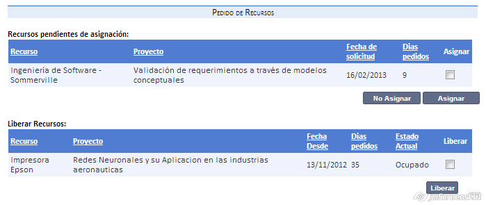
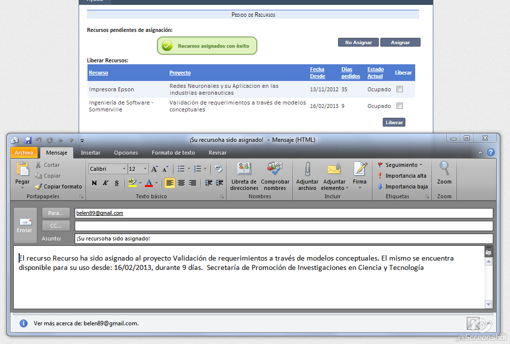

Asignación de Recursos

Asignación:
Todos los recursos a ser asignados aparecen listados con un checkbox.
Se puede elegir:
Asignar los recursos que están seleccionados.
No asignar los recursos que están seleccionados.
Ambos casos darán la posibilidad de enviar un mail a quien lo solicitó informando la situación. Este mail tiene un mensaje autogenerado, como el que se muestra a continuación.

Su envio no es obligatorio.
Liberación:
Para liberar un recurso ya que ha sido devuelto a la secretaría debe seleccionarlo y luego hacer click en “Liberar”.
En caso de que el mismo ya este reservado por otro proyecto, aparecerá en los pendientes de asignación.
*En caso de que no hayas recursos para liberar o asignar, aparecerá un mensaje informativo.
Created with the Personal Edition of HelpNDoc: Full-featured Help generator